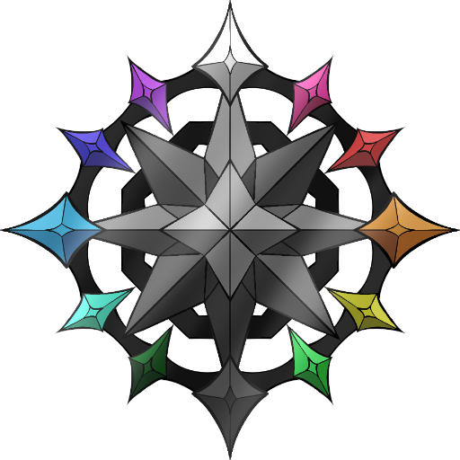

Two module systems, side by side
Seven fixed legacy modules — Director, Navigator, Hero, Writer, Scribe, Sage, Artisan — alongside the v3 "Nexus nest": an unlimited tree of modules you build yourself.
DraconDex is a desktop app for organizing the data behind a story — characters, places, timelines, relationships, and free-form notes — for novelists, story-game designers, and D&D DMs.
แอปจัดการข้อมูลโลกในนิยาย — ตัวละคร, สถานที่, ไทม์ไลน์, ความสัมพันธ์ และโน้ตอิสระ สำหรับนักเขียน นักออกแบบเกม และ DM (ภาษาไทยเป็นภาษาหลักของแอป)

Everything lives in one local SQLite database. Nothing is uploaded, nothing phones home, and the whole project folder can travel on a flash drive.
Seven fixed legacy modules — Director, Navigator, Hero, Writer, Scribe, Sage, Artisan — alongside the v3 "Nexus nest": an unlimited tree of modules you build yourself.
Write [[a link]] anywhere in your notes and get
backlinks across every piece of content in the project.
Dialogue graphs, sketching and diagramming surfaces built on vendored D3 and Konva — bundled with the app, so they work with the network off.
Thai by default, with English, Japanese, Korean, Chinese, Vietnamese, Indonesian and eleven more — plus midnight, daylight and moonlight themes.
The portable build keeps your data next to the executable. Copy the folder to a USB stick and your project comes with it.
Export the whole database, a single Nexus, or one module
subtree to a file. Optional Google Drive backup uses the
drive.appdata scope and your own OAuth client — no
DraconDex server in the loop.
Instead of a fixed set of screens, DraconDex v3 lets you grow a tree of modules. Each node picks one of fifteen kinds, and the kind decides what the module can do — collect records, draw a map, track a timeline, sketch, or write prose.
สร้างโมดูลซ้อนกันได้ไม่จำกัด แต่ละโหนดเลือก "ชนิด" ได้ 1 จาก 15 ชนิด — ชนิดเป็นตัวกำหนดว่าโมดูลนั้นทำอะไรได้บ้าง
Paste a repository link into Settings → Plugins. DraconDex shows you exactly which files it will fetch, which tables it will create and which hosts it may talk to — then runs the plugin in a separate sandboxed window with no access to your main data.
The main app, built on Electron. Ships three ways every
release: an NSIS installer, a single-file portable
.exe, and a zipped portable folder.
A Flutter port shares the same SQLite schema, so databases move between desktop and phone. It is developed independently and is currently behind the desktop app in features.
The project keeps detailed, actively-maintained docs — written in Thai, the project's primary language.
The v3 module-tree architecture, and how each kind maps to files and IPC channels.
How each system behaves — Director, Navigator, Hero, Writer, Scribe, Sage, Artisan, wikilinks, the IDE shell.
The plugin runtime: manifest format, the sandbox, and an honest account of what it does and does not protect against.
Setting up optional Google Drive backup with your own OAuth client.
A per-file reference of what lives where in the codebase.
What changed and why, session to session.
No account. No subscription. Download it, run it, and your data stays where you put it.